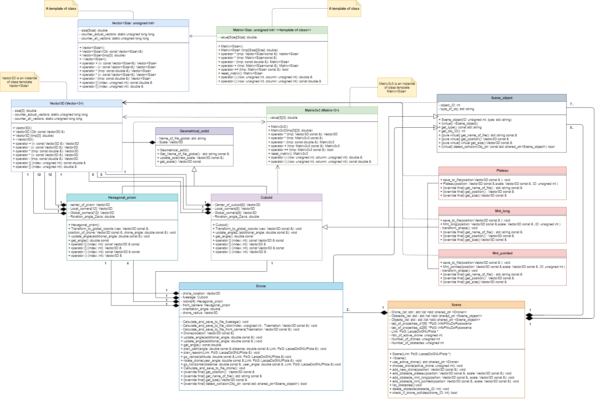

- Autor
- Szymon Sobczak nr 259275.
- Data
- 06.06.2021
- Wersja
- 1.0
Aplikacja realizuje schematyczna wizualizacje w Gnuplot poruszania sie wymodelowanym dronem po powierzchni Tytana, ksiezyca Saturna. Dodano mozliwosc umieszczania trzech typow przeszkod terenowych na powierzchni ksiezyca. Jest to realizacja trzeciej fazy projetku, dodano sprawdzanie i zapobieganie kolizji drona z innymi obiektami sceny.
Cel ćwiczenia
Wykształcenie umiejętnosci modelowania kluczowych dla danego problemu pojęć.
Generowanienie dokumentacji z wykorzystaniem systemu doxygen.
Najwazniejsze elementy programu.
- Modelowanie drona skladajacego sie z wielu wzajemnie zaleznych elementow i wizualizowanie go w programie Gnuplot.
- Wykonywanie ruchow drona nad plaszczyzna reprezentujaca powierzchnie ksiezyca.
- Poruszanie dronem po zaplanowanej sciezce i narysowanej.
- Wykonywanie predefiniowanego zestawu ruchow przez drona do wykonania tak zwanego "zwiadu".
- Animowanie ruchu drona.
- Umiejetnosc wykorzystania pol statycznych oraz konstruktorow kopiujacych do swotrzenia licznika wektorow3D.
- Umiejetnosc dzialania na listach wskaznikow na rozne obiekty.
- Umiejetnosc sprawdzania kolizji obietkow, za pomoca prostych algorytmow polegajacych na geometrii analitycznej.
- Wprowadzenie prostej autonomii dla drona.
Diagram UML projektu.

 1.9.1
1.9.1